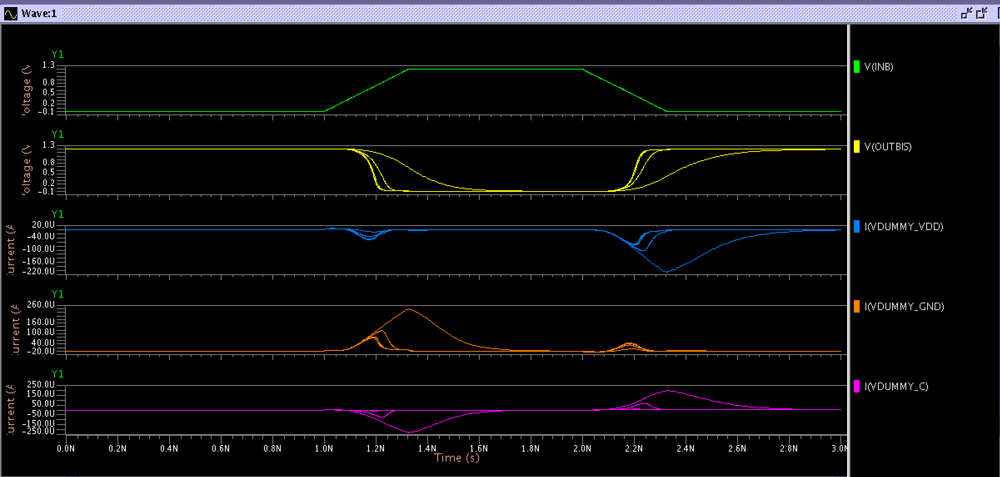
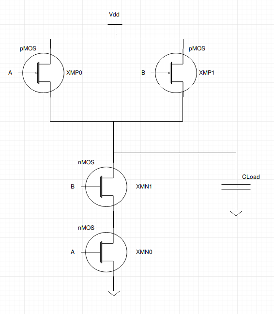
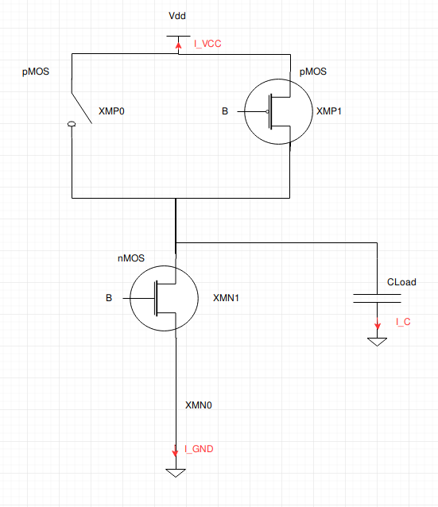

The SPICE simuation is done using 5 different CLoad values (0.005 fFarad, 0.05 fFarad, 0.5 fFarad, 5.0 fFarad, 50.0 fFarad).
In the next table we report all the current values obtained during the ELDO simulation:
| Load | maxIgndF | maxIVddR | maxIgndR | maxIvddF | maxIloadF | maxIloadR |
|---|---|---|---|---|---|---|
| 0,005 fF | 7.653E-05 | -7.001E-05 | 4.588E-05 | -4.791E-05 | -1.260E-07 | 1.151E-07 |
| 0,05 fF | 7.706E-05 | -7.042E-05 | 4.569E-05 | -4.768E-05 | -1.250E-06 | 1.143E-06 |
| 0,5 fF | 8.196E-05 | -7.438E-05 | 4.406E-05 | -4.564E-05 | -1.164E-05 | 1.064E-05 |
| 5,0 fF | 1.166E-04 | -1.028E-04 | 3.469E-05 | -3.437E-05 | -7.528E-05 | 6.757E-05 |
| 50,0 fF | 2.408E-04 | -2.092E-04 | 1.257E-05 | -1.104E-05 | -2.304E-04 | 1.997E-04 |

On the above image we can observe the behavior of our NAND gate under a certain imput combination.
In fact, the input voltage on the pin INA is kept at a high level (1.2V) for the entire measurement and so not reported in the waveforms (since no transition will happen on this input).
INB.Vdd pin.GND pin.Since the INA voltage is kept at a high level for the entire time of the simulaiton while the INB voltage firstly transitions from Low to High and then from High to Low, the output "follows" (and complements) the transition on the input pin INB.
We reported the general structure in the following circuit, as it is described in the SPICE files:

Below we show the same circuit considering that the voltage on the input pin INA is at a High level voltage for the entire period of the simulation, as long as the directions of the currents measured:

As you can see the INA PMOS (XMP0) acts like an open circuit, while the INA NMOS (XMN0) acts like a short circuit.
INB Low to high transitionWe can now analyze what happens during the INB voltage transition from a Low logic level to the High logic level (from 1ns to 1.2ns in the previous graph):
As we can see from the waveforms, at each load capacitance corresponds different shapes of the same waveform. In general, if we increase the load capacitance the overall output trasition will be slower (yellow waveform) for both the trasitions. For the currents (blue, orange, purple waveforms) we can see another general rule of thumb: if we increase the load capacitance the current that flows on the different branches of the circuit will be higher.
By looking more closely at the orange waveform (Current on the GND branch) we can clearly appreciate that a higher capacitance means a higher current peak. Since the XMN1 NMOS transistor is closing during the INB transition from Low to High, the current is starting to flow from the capacitance (which is charged and starts to discharge), flowing through the NMOS transistors (XMN0 and XMN1) and finally flowing to the ground terminal. A higher load capacitance thus means more charges to move in the unit of time and so more current to transfer from the capacitance to ground.
By looking at the purple waveform (current on the capacitance) we can see a very similar current trend, but with the opposite sign. This happens because the current has been supposed, on the capacitance, to flow to ground. In this case the current is doing exactly the opposite, flowing from the capacitance to ground but passing through the NMOS transistors (and so following a counter-clockwise direction).
By looking at the blue waveform (current on the VDD terminal) we can see a more subtle behavior. In fact there's a very small peak of current (compared to the other ones at the same timestamp) that represents the Short Circuit current flowing on the transistors.
This happens because, for a very small amount of time both the XMP1 and XMN1 transistors are switching (the first ON->OFF while the second OFF->ON), and so both the transistors are ON at the same time.
Thus, current is flowing from VDD directly to GND for this small amount of time.
This also explains why the peaks on the GND current are higher than the peaks of the current flowing from the capacitance: the GND current is exactly the sum of the VDD current and the Capacitance current.
INB Low to high transitionFor this second transition we can apply the same considerations we applied to the previous case.
Still, in this case the XNMP1 transistor will go from a OFF state to a ON state, while the XMN1 transistors will go from a ON state to a OFF state (INB is going from 1.2V to 0V).
Thus, in this case, the load capacitance will be charged and the current flowing in it will assume a positive sign.